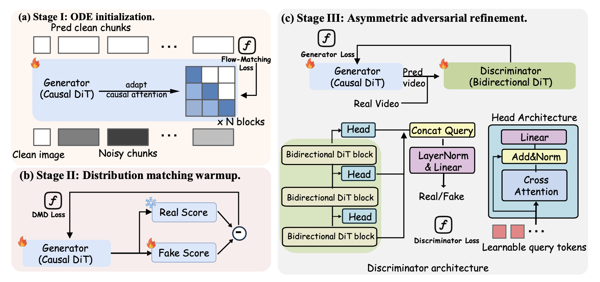

AAD-1: Asymmetric Adversarial Distillation for One-Step Autoregressive Video Generation
Abstract
We present AAD-1, an Asymmetric Adversarial Distillation framework for One-step autoregressive image-to-video generation. State-of-the-art methods adopt adversarial distillation but suffer from motion collapse and training instability, resulting in static videos. AAD-1 addresses these challenges through two key designs in architecture and training strategy. Our key architectural insight is to break the symmetry between generator and discriminator. While the generator remains causal to preserve autoregressive sampling capability, the discriminator attends bidirectionally over the full spatiotemporal context and produces a single holistic realism score for the entire video sequence. This asymmetric design enables the discriminator to effectively detect global temporal failures and long-range drift that cause motion collapse in autoregressive generation. To stabilize training, we introduce a phased strategy that first uses distribution matching to bootstrap a stable one-step generator, providing a warm-up phase that brings the student distribution closer to the teacher before adversarial distillation begins. Extensive experiments on VBench demonstrate that AAD-1 achieves state-of-the-art performance in one-step autoregressive video generation.
Training Pipeline
AAD-1 trains a one-step autoregressive generator in three stages. Stage I adapts a pretrained bidirectional video model into a causal generator with ODE initialization. Stage II performs one-step DMD warmup under self-rollout training. Stage III applies asymmetric adversarial refinement, where a bidirectional discriminator uses full-video context for video-level discrimination while the generator remains causal for autoregressive sampling.

Video Results
BibTeX
@misc{aad1,
title={AAD-1: Asymmetric Adversarial Distillation for One-Step Autoregressive Video Generation},
author={Haobo Li and Yanhong Zeng and Yunhong Lu and Jiapeng Zhu and Hao Ouyang and Qiuyu Wang and Ka Leong Cheng and Yujun Shen and Zhipeng Zhang},
year={2026},
url={https://aad-1.github.io/}
}